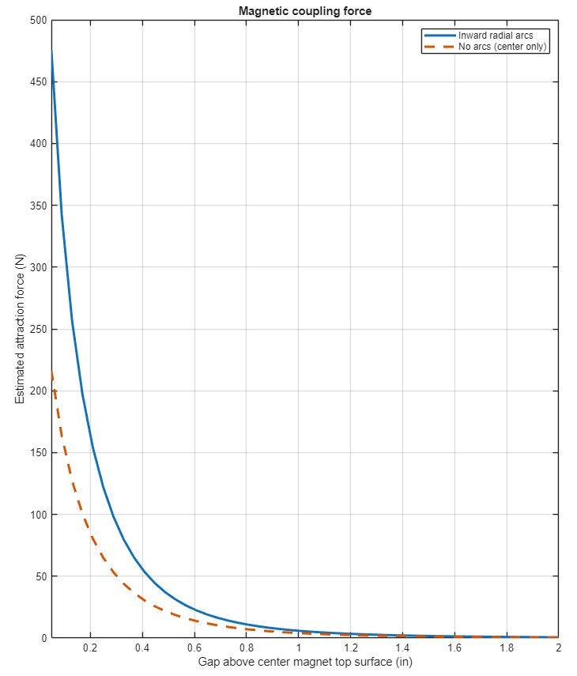
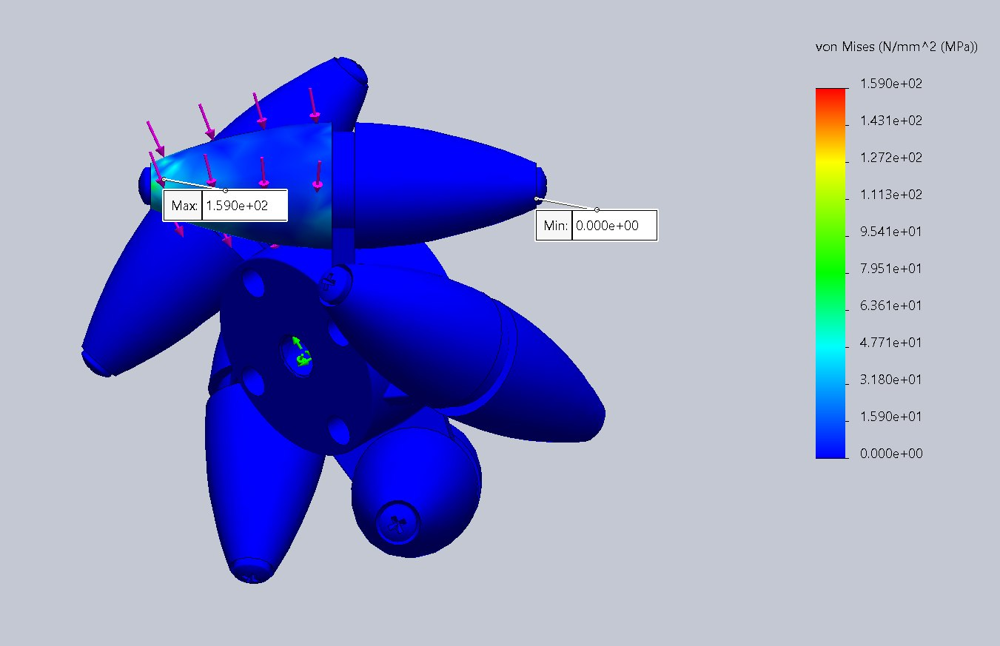
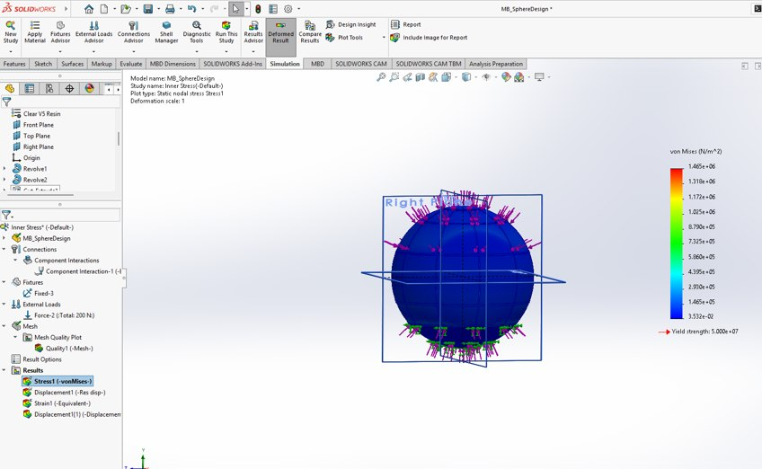

Design. Simulate. Refine.
Structural simulations, magnetic-force modeling, and performance evaluation.
Analysis informs the next iteration.
Simulation and engineering analysis guide subsystem refinement before integrated prototype testing.
Magnetic coupling
MATLAB comparison of attraction force versus separation distance, including central-magnet and arc-magnet configurations.
Structural integrity
SolidWorks static studies of the internal support, spherical shell, Mecanum wheel, and yoke.
Control & testing
Electrical integration and proposed omni-directional dynamometer for future torque and speed assessment.
Magnetic attraction vs. gap
MATLAB simulations compare estimated attraction force at different separation distances for magnetic arrays. The design emphasizes keeping the array near the steel plate without interfering with the shell.
A maximum magnetic-force load case of 150 N is used for structural evaluation of the internal support. Coupling performance will be assessed further through prototype testing.

Mecanum roller stress
SolidWorks static analysis examines how loading transfers through the Mecanum roller, axle screw, and hub. The modeled stress concentration occurs near the roller fastener, making this connection a priority for refinement.

Sphere compression study
The rigid sphere was evaluated in SolidWorks using a 200 N compression load, approximately equivalent to a 20 kg payload. The static model produced a peak von Mises stress of 1.465 MPa and a maximum displacement of 0.005829 mm.
Physical traction and slip tests are still required for the proposed flexible belts.

Integrated performance testing
Subsystem simulations provide a foundation for hands-on validation of the assembled ball drive.
Magnetic coupling
Measure attraction and resistance to decoupling across representative operating gaps and obstacle loads.
Traction & mobility
Evaluate wheel slip, multi-directional movement, incline handling, and obstacle traversal.
Electrical performance
Use the dynamometer and control electronics to characterize speed, torque, response, and operating time.